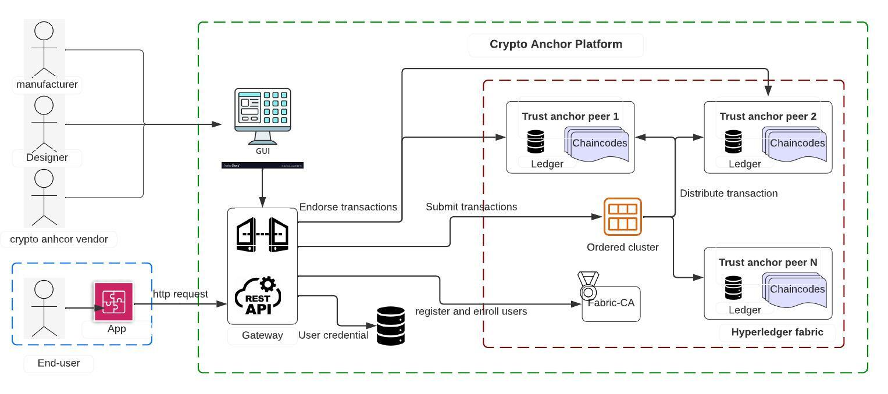
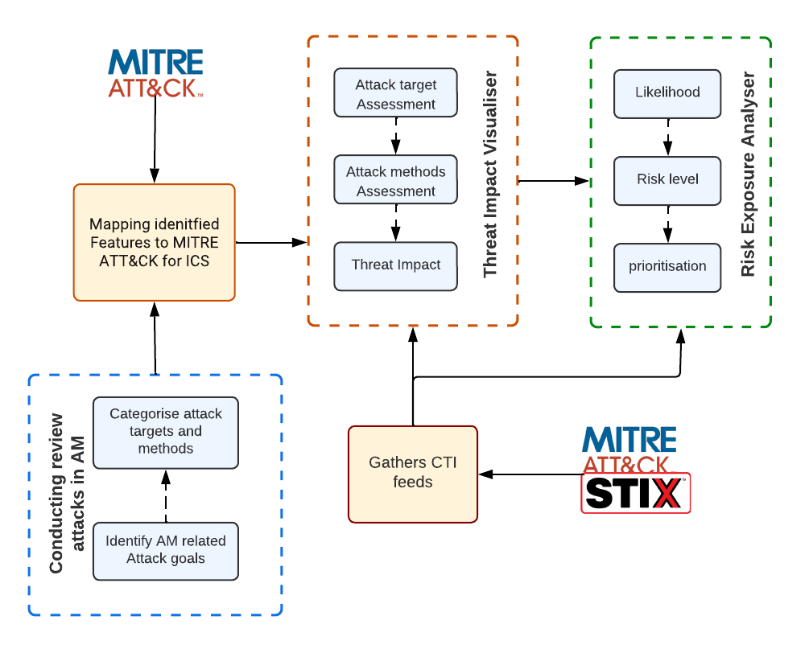
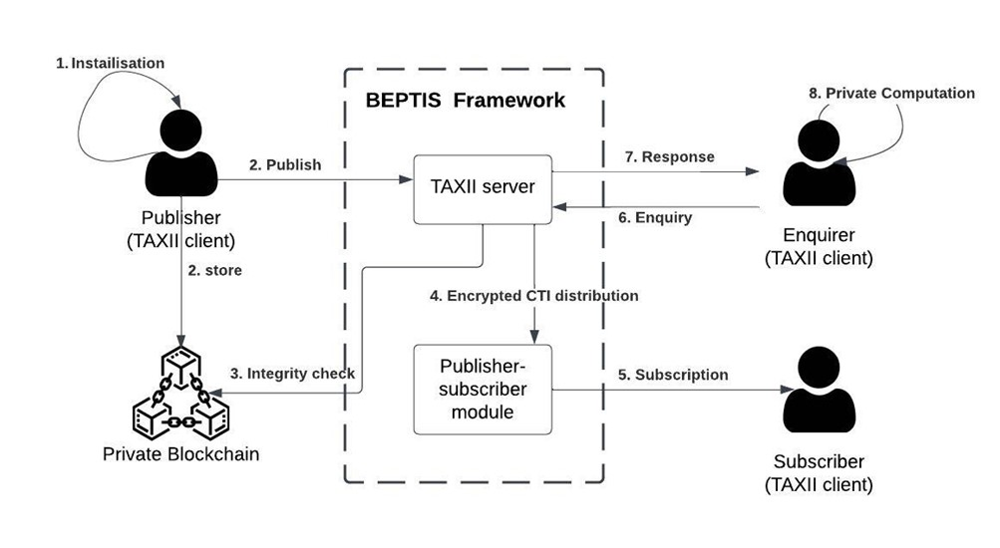

RAMONA: Responsive Additive Manufacture to Overcome Natural and Attack-based Disruption
The RAMONA aims to design and develop tools for monitoring, analyzing, assessing, and sharing intelligence related to threats and disruptions. One key feature is a Blockchain network with a double-lock system. The project has achieved several milestones, including the development of three subsystems: the Threat Impact and Risk Analyzer, the Distributed Ledger-based Crypto Anchor, and the Threat Information Exchange. These tools have significant implications for cybersecurity in additive manufacturing, identifying vulnerabilities, enhancing incident response capabilities, ensuring regulatory compliance, and fostering collaboration within the industry. They also contribute to preventing major cyber-attacks and reducing the overall cost of cybersecurity measures.
Distributed Ledger-based Double Lock Integrity System.

The tool focuses on developing a double-lock integrity system that ensures a dual verification mechanism for confirming the protection of AM (Additive Manufacturing) components.
It utilizes a private permissioned blockchain, specifically the Hyperledger Fabric, to establish a physical lock for preserving the integrity of the physical fingerprint and a digital lock for maintaining the integrity of the digital hash on the component's G-code digital file.
The subsystem is supported by four smart contracts that facilitate various functionalities such as part authenticity verification, distributed off-chain storage of G-code, file integrity checks, and secure file downloads.
Indicator of Compromises Evaluator

The tool includes a Threat Impact Visualiser and Risk Exposure Analyser, which is responsible for real-time monitoring, assessment, and evaluation of threats and associated Indicators of Compromise (IOCs).
It prioritizes the identified threats to provide valuable threat intelligence to the stakeholders..
BEPTIS: Blockchain Enabled Private Threat Intelligence Sharing Framework

The tool allows organisations utilising cyber technologies like TAXII to share threat-related information and intelligence, particularly priority IOCs and integrity violation data.
This subsystem's design has been successfully finished, and development is progressing.
How these Tools Impact the Additive Manufacturing Supply Chain
These tools can have a tremendous impact on the cybersecurity area. These solutions support enterprises involved in additive manufacturing by detecting vulnerabilities, prioritising security initiatives, expanding incident response capabilities, guaranteeing regulatory compliance, and boosting reputation and consumer confidence.
These tools also offer the following important advantages:
- Facilitated cooperation and Threat Intelligence Exchange: Organisations may respond to threats more successfully by facilitating cooperation and prompt threat intelligence exchange within the AM sector.
- Prevention of Significant Cyber Attacks: The technologies help guard against serious cyber-attacks that might result in detrimental outcomes, including intellectual property theft, sabotage, and damage to vital infrastructure.
- Lower Cost of Cybersecurity: The AM sector can lower the total cost of cybersecurity measures by pooling threat intelligence and working more productively together.